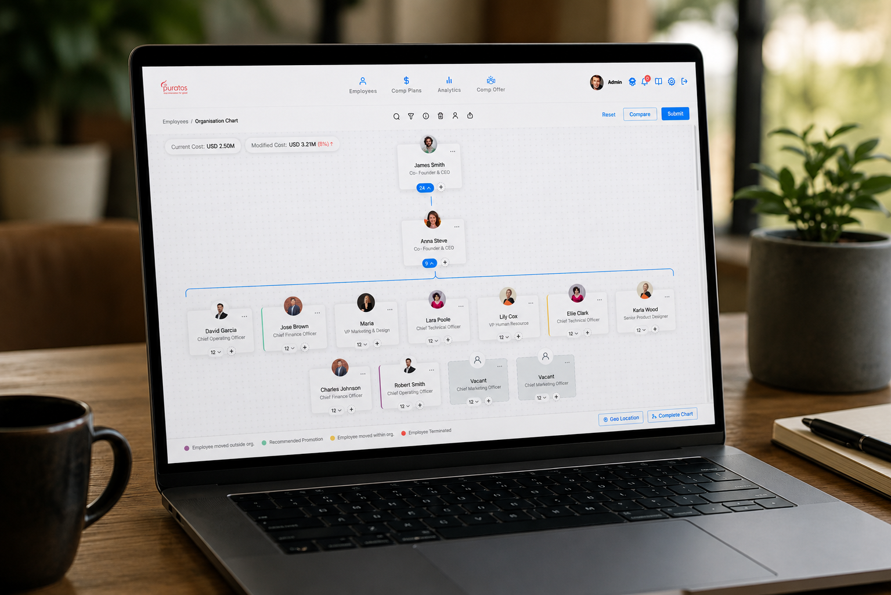
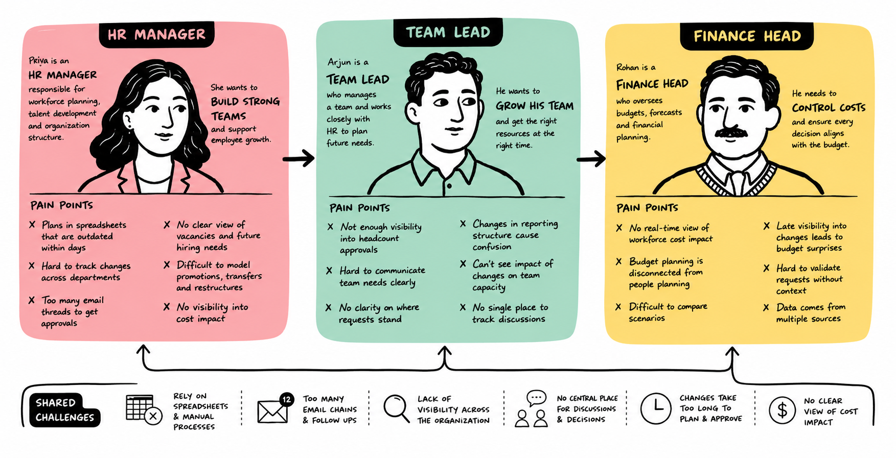
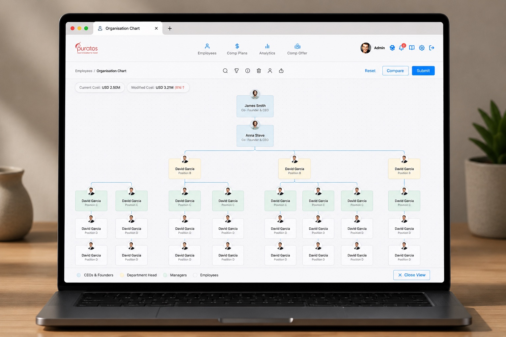
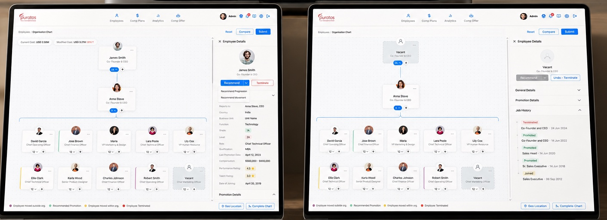
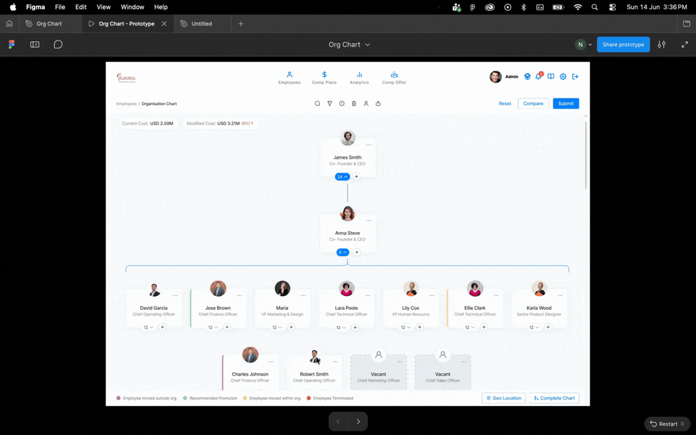
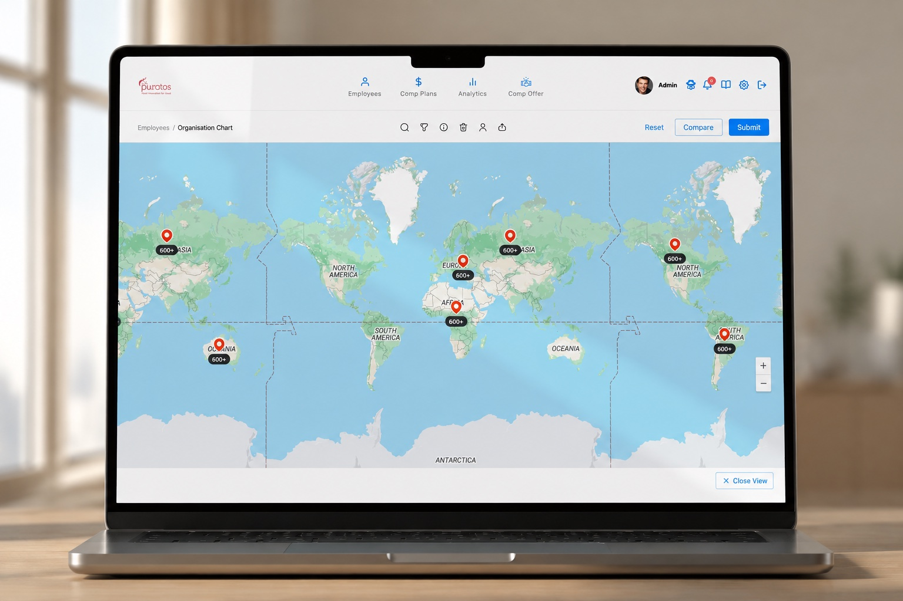
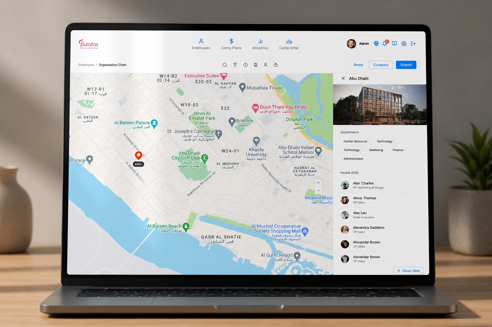

Compport · Enterprise SaaS · 2026
Got 30 seconds? ⏱️
Here's the whole thing in one breath.
We replaced twelve emailed spreadsheets with one visual canvas — where you drag a person, and the budget moves with them. Every change logs itself onto the node it happened to.
And here's why it needed doing
of HR teams still run workforce planning on spreadsheets.
say a visual org view is essential — 68% still build it by hand.
of spreadsheets contain errors. These ones decide headcount.
OrgChart, State of Workforce Planning 2026 · ContinuumCloud 2026
Still here? Two cards, then. 🃏
Enterprise HR teams ran restructures across a dozen spreadsheets emailed around the company. Nobody could say which file was current. Nothing recorded who moved whom, or why — and Finance found out last.
A single live org canvas. Drag a role and the modified cost updates against current cost in the same breath. Conflicts surface while you plan instead of at execution, and the audit trail lives on the node — not in a module nobody opens.
Still reading? Brilliant. 👇The whole story, from a human pyramid to a shipped canvas.
01 Let's set the context
🤸Picture a human pyramid.
Everyone is standing on somebody's shoulders. Everyone knows exactly whose.
Now — take one person out of the bottom row.
Everything above them rebalances. Some of it holds. Some of it really doesn't.
Now do it with 2,000 people. On paper. From memory.
While twelve other people are also quietly moving someone.
02 The problem scenario
Meera runs the annual restructure at a 2,000-person manufacturing firm. Here are two ordinary weeks in her job.
It's Wednesday. The CFO wants the headcount cost for the Engineering reorg — today, ideally.
Meera opens the shared folder. There are four files. Two of them are called final. She isn't sure which one Finance has been working from since Monday.
So what are her options? 🤷♀️
All of that — before a single decision gets made!
It's Friday. Compliance asks a simple question: who approved moving that role out of Priya's team, and when?
There is no record. The approval happened in an email thread, three versions of the file ago.
Again — what can she actually do? 🤷♀️
Again — before a single decision gets made!
Both scenarios are illustrative — built from the pain points in stakeholder interviews, not transcripts of one specific day.
And this is the part that stings: across a full cycle, this reconciliation ate more than 40 hours before anyone made a call. Half of HR leaders spend five or more hours a month just rebuilding charts. Teams lose about 3.6 hours a week to fixing spreadsheet mistakes — roughly 22 working days a year, per person.
DOSS Research 2026
03 Meet the persona
"I spend more time managing spreadsheets than managing people. By the time I reconcile every file, the data is already outdated."
She isn't the only one in the dark. Vikram, the VP of Finance, has to approve the budget impact of every structural change — but receives it as an attachment he has no way to verify. Priya, an engineering team lead, hears about restructuring after it's decided, with no visibility into how it hits her team until it's far too late to push back.
Three people. One org chart. Never the same version of it.
04 The problem statement
How might we give Meera one place to plan a restructure — where Finance and her team leads see the same thing she does, and every change explains itself?
05 Project goals
Let people reach the org information they need without hunting for it across files, folders and inboxes.
Make the consequences of a change visible as it's made — cost, conflicts, and who signed off — to cut anxiety and build trust in the number.

06 What the research said
Nobody asked for a prettier chart. Every single conversation came back to one shared surface, and a record of what happened on it.
"We need one place where HR, Finance and Team Leads see the same data."
"Audit trail is non-negotiable. Every change must be traceable to a person."
"I want to model three scenarios side by side before committing to one."
"The biggest time waste is reconciling versions after every meeting."
"Team leads need to see proposed changes before they're finalised."
"We need real-time budget impact as changes are made — not after."

07 Where we could win
In that order — because if the first one fails, none of the others matter.
One workspace where every stakeholder sees the same live data.
Manipulate the structure by dragging nodes, not editing cells.
Every change auto-logged with who, what, when and why.
Compare what-ifs on cost and headcount side by side.
Role-based comment and approval in place of email chains.
08 Four forks in the road
Which made shipping the safe option the actual risk. Here's where we went instead, and why.
Tabular, spreadsheet-style data entry.
A visual org chart with inline editing. Users equated spreadsheets with the problem itself — the interface had to feel different to earn any trust. And tables are built for reading rows; they don't show relationships. A cell reading "Manager: Sarah" won't tell you Engineering's backfill depends on Finance signing off. A linked chart does, at a glance.
A manual "save & send for review" handoff.
A real-time workspace with role-based access. The email review cycle was Meera's single biggest time sink — four to five rounds a cycle, and no reliable way to tell which attachment was live. Going live meant Finance and team leads could react the moment a change was made, not three threads later.
Hidden dependencies, discovered at execution.
A conflict panel, surfaced during planning. Cross-functional teams carried invisible assumptions about each other's moves — Engineering counting on a budget line Product had already claimed. A visible panel, with affected roles joined by a red dependency line, meant the clash got settled on the canvas instead of blowing up mid-restructure.
A standalone audit-log module.
Contextual history on each node. Compliance needs to know who approved a change, when, and under what conditions — usually under time pressure. A separate log makes someone leave their workflow to go find that. Pinning history to the node means the context travels with the change. Remember Meera's Friday? This is that fix.

09 The build
Two weeks, four designers. I owned the chart canvas, the node states and the compare flow.
Drag a person, open a vacancy, promote a lead — the modified cost figure updates against current cost in the same breath, and the legend explains every state change in plain language. No decoder ring needed.
The structure reads geographically too. Clients running 600+ headcount per site kept asking the one thing the chart couldn't answer: where does this restructure actually land? Toggling to the geo view swaps hierarchy for footprint — a world roll-up, down to a single office and its department split.
The IA mirrors how Meera thinks: big picture first, then planning, then budget, then the record of what happened.




10 What it was built to change
Same request from the CFO. Same deadline. Here's the new route.
These are the targets the module was designed against, drawn from the baseline in stakeholder interviews. I left the engagement before the feature reached production — so post-launch numbers exist, but they aren't mine to claim.
11 What I took away
A 2,000-person chart with matrix reporting doesn't stay legible at the zoom levels I designed for — and I found that out on the last day of the sprint. Next time the ugliest real dataset comes before the visual system, not after.
Every fork here rejected the pattern people already knew. That felt risky each time. But the familiar pattern was the thing users had learned to associate with the problem — so shipping it would have been the bigger gamble.
Meera was the primary persona, but the module only works because Vikram and Priya can see it too. The best fix in the whole project — history on the node — was for someone who never touches the canvas.
Meera didn't need a better spreadsheet. She needed to stop using one entirely.